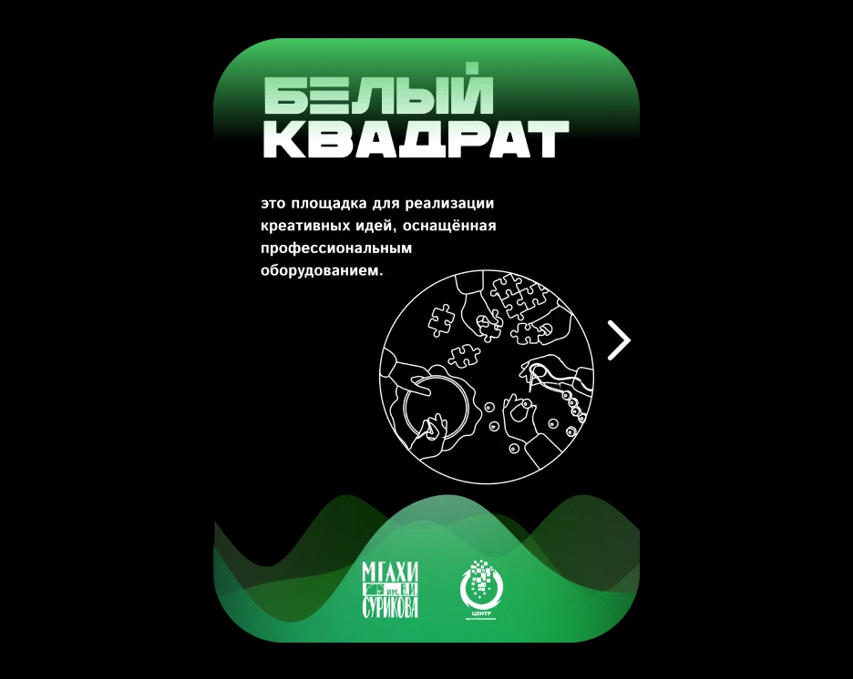

PA–2004 / Web design
White Square
An interactive centre brochure with activity navigation and an overview of its facilities. High-contrast graphics make the information stand out.

MOTION / PROTOTYPE
Interface in motion
YouTube ↗PROJECT DETAILS / ORIGINALS